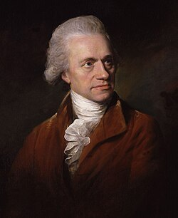
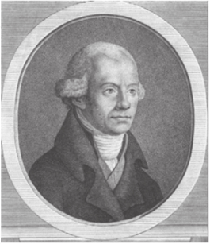
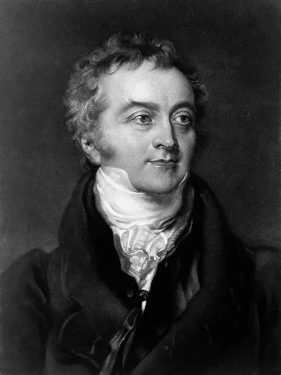

Cientista e Biografia

Isaac Newton
1643 – 1727
Isaac Newton foi um físico, matemático e astrônomo, nascido em 1643, na Inglaterra. É considerado um dos cientistas mais importantes da história, sendo reconhecido por suas descobertas que contribuíram para o avanço da ciência e da compreensão do universo.
Entre suas principais contribuições estão as três leis do movimento e a lei da gravitação universal, que ajudaram a explicar o comportamento dos corpos e os movimentos dos planetas. Também realizou pesquisas importantes sobre a luz, as cores e a óptica.
Suas descobertas influenciaram outros cientistas e serviram de base para novas pesquisas sobre a luz e a radiação eletromagnética. Newton faleceu em 1727, deixando um legado científico que continua sendo estudado até os dias atuais.

William Herschel
Em 1800, ele descobriu a radiação infravermelha, localizada além da faixa vermelha do espectro.

Johann Wilhelm Ritter
Em 1801, ele identificou a radiação ultravioleta,
a que fica situada além da faixa violeta.

Thomas Young
Em 1802, ele realizou estudos sobre os comprimentos de onda das diferentes cores.